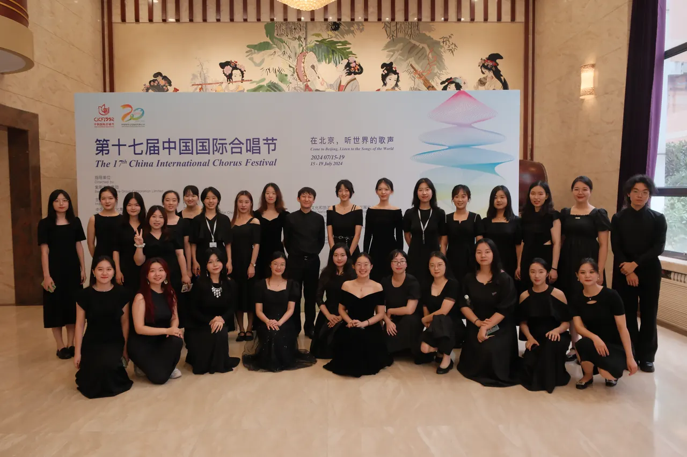
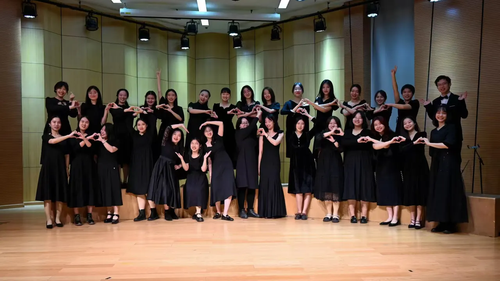
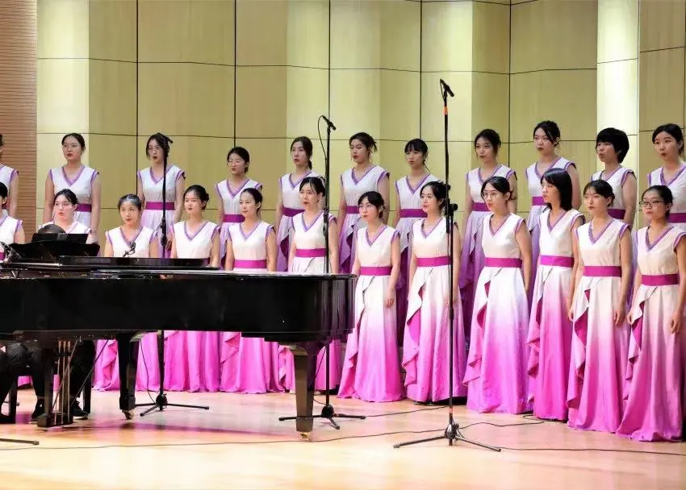
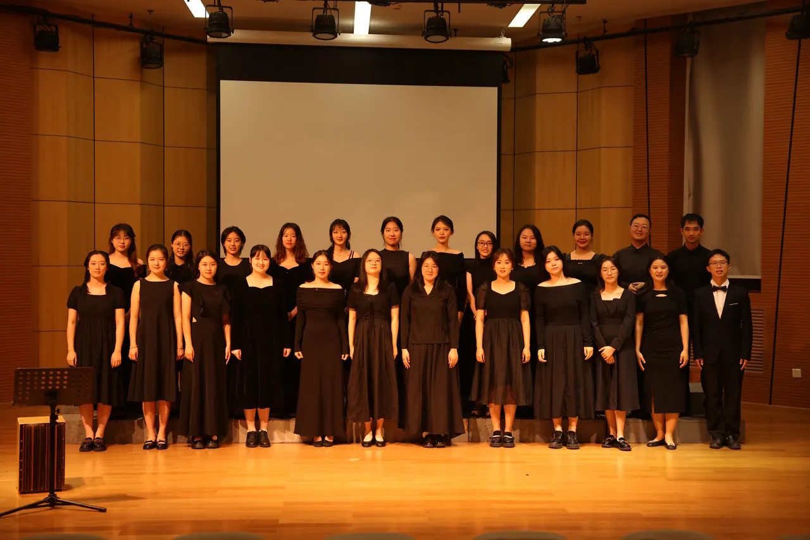

2024
北京大学生音乐节声乐组银奖
参赛曲目：《Song of Hope》《海岛冰轮初转腾》
2024

第十七届中国国际合唱节青年学生组别二级团队
参赛曲目：《Harasztosi》《雨霖铃》
2022

北京大学生音乐节声乐组最佳表演奖
参赛曲目：《登鹳雀楼》《江村》
2021

北京大学生艺术节声乐组银奖
参赛曲目：《子猫物语之 Children》《调笑令·胡马》
每一项成绩背后，都对应一次排练、一组曲目和一段共同经历。

参赛曲目：《Song of Hope》《海岛冰轮初转腾》

参赛曲目：《Harasztosi》《雨霖铃》

参赛曲目：《登鹳雀楼》《江村》

参赛曲目：《子猫物语之 Children》《调笑令·胡马》